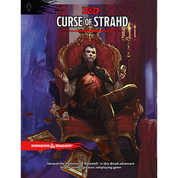
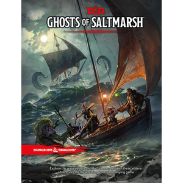
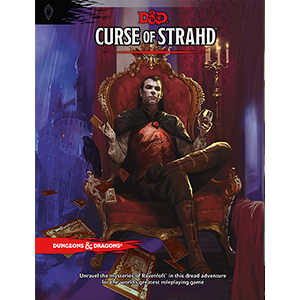
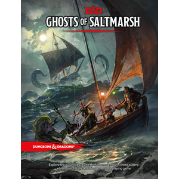

Bienvenidos a la Taberna de Aventuras
¡Saludos, valientes aventureros! Este es un lugar sagrado donde las historias épicas y los relatos increíbles se entrelazan. Aquí, en la Taberna de Aventuras, tienes la oportunidad de compartir tus propias hazañas y deleitarte con las intrigantes narraciones de otros valientes como tú.
Imagínate estar en una típica taverna, rodeado de compañeros de viaje, cada uno con sus propias experiencias y perspectivas únicas. En este espacio, podrás sumergirte en las historias que surgieron en las campañas oficiales de Dungeons & Dragons, descubriendo las maravillas y peligros que cada partida trajo consigo.
Explora las crónicas, desentraña los giros del destino y descubre qué tan creativa o desquiciada puede ser la mente de un aventurero cuando se enfrenta a los desafíos del rol. Permítete ser cautivado por las emociones, las risas y las lágrimas que se entrelazan en cada historia compartida aquí.
En la Taberna de Aventuras, te invitamos a sumergirte en un mundo de fantasía, donde la imaginación no tiene límites y las hazañas heroicas cobran vida a través de las palabras. ¡Levanta tu copa y comienza a escribir tu propio legado!
 


